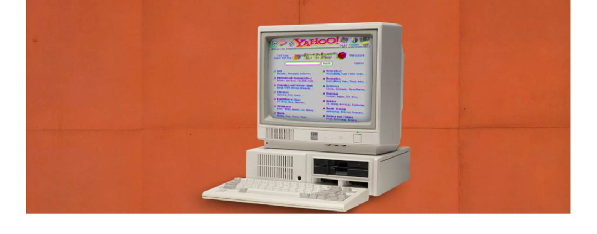

things aren't always#000000 or #ffffff
things aren't always#000000 or #ffffff
EMBEDED YOUTUBE VIDEO GOES HERE
EMBEDED YOUTUBE VIDEO GOES HERE
NEWS | view all news
 C# coding
C# coding interface Design
interface DesignFeatured | view all featured media

Mobile applicationevelopment is the process of making or creatingevelopment is the process of making or creating development is the process of making or creating a mobile ing system.
approach that suggests that design and development should respond to the ggests that design and development should respond toggests that design and development should respond touser's .